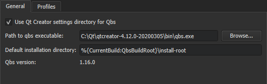

Setting Up Qbs
To use Qbs to build a project, you must create a .qbs file for the project. You can use Qt Creator to create a C or C++ project that is built with Qbs. For more information about Qbs, see the Qbs Manual.
The application is built using the default Qbs profile that is associated with the build and run kit. Qt Creator automatically creates a Qbs profile for each kit. You can edit the build profiles by adding new keys and values.
To check which Qbs version is being used, select Tools > Options > Kits > Qbs.
Building Qbs
If you build Qt Creator yourself from the Qt Creator Git repository, you also need to fetch the Qbs submodule to get Qbs support:
- Fetch the Qbs submodule in your Qt Creator git checkout with
git submodule update --init. - Run qmake on Qt Creator and build Qt Creator again.
Specifying Qbs Settings
To specify settings for Qbs, select Tools > Options > Kits > Qbs.

By default, Qbs profiles are stored in the qbs directory in the Qt Creator settings directory to ensure that different Qt Creator instances do not overwrite each other's profiles. If you only run one Qt Creator instance, you can store the profiles in the Qbs settings directory instead, by deselecting the Store profiles in Qt Creator settings directory check box.
In the Kit field, select a build and run kit to view the properties of the associated Qbs profile. To modify the properties of the Qbs profile associated with a kit, select Tools > Options > Kits. For more information, see Editing Qbs Profiles.